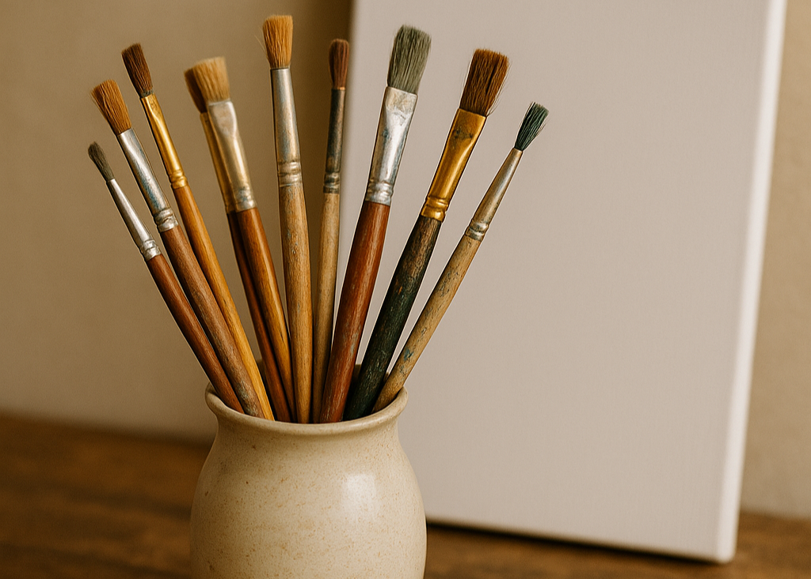
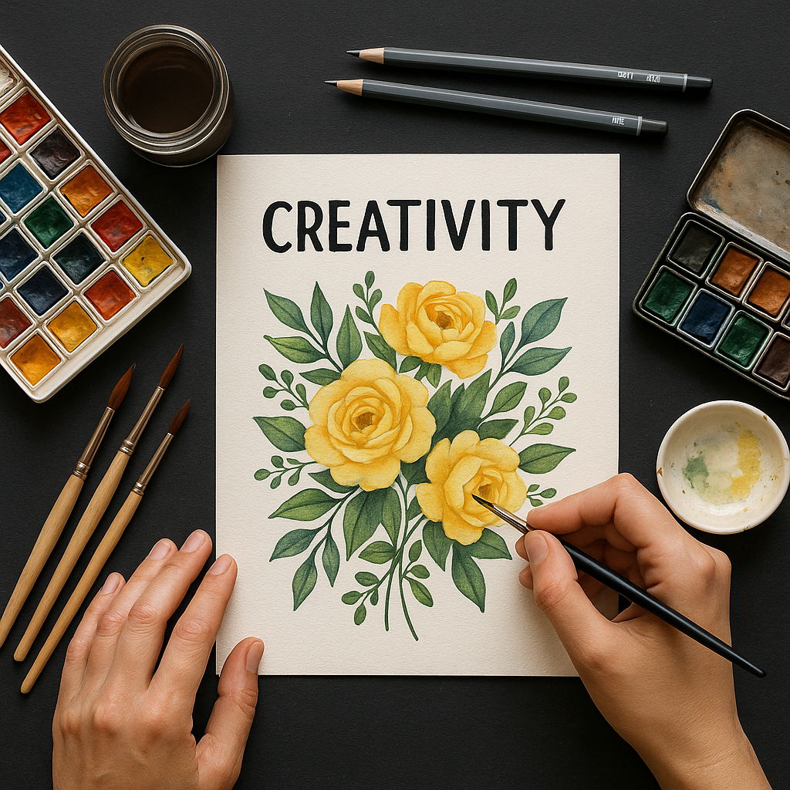
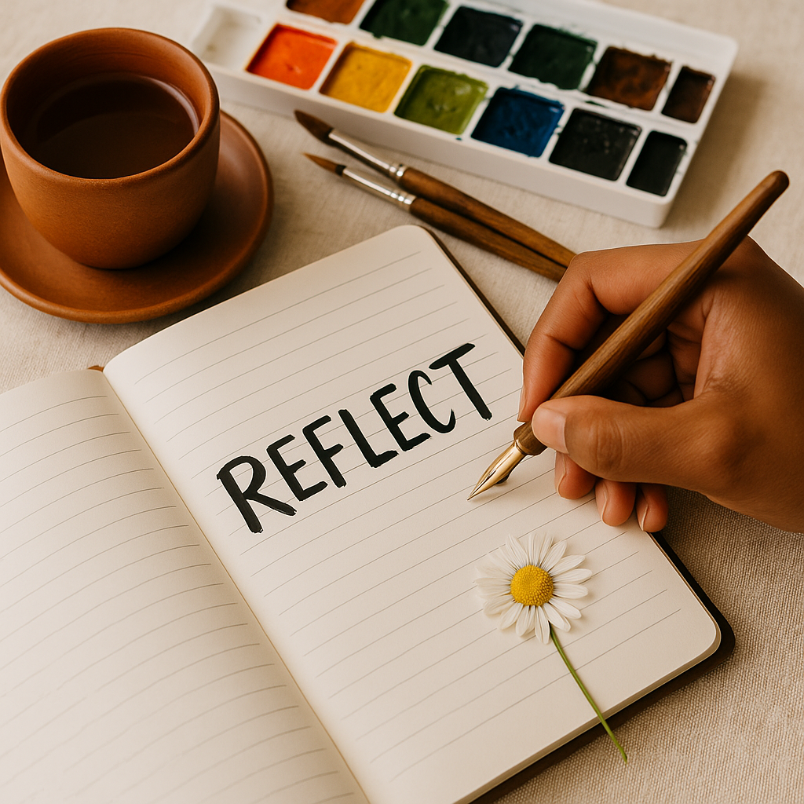

Create a visual diary that speaks louder than memories.
Combine sketches, photos, poems, and personal reflections into a unique creative journal – your own safe space online.
Turn moments into masterpieces
Discover how everyday life can inspire meaningful art and storytelling.
Reflect, document, and express yourself with creative freedom.

Why Journaling Matters
Writing and drawing help us connect with ourselves.
Journaling builds awareness, reduces stress, and keeps memories vivid.

What You Can Share
From short poems to raw sketches, captured moments to daily thoughts – share it all in a creative and personal way.

How It Works
Start a new memory with a click.
Upload an image, write your story, or sketch digitally.
You own the voice.
10K+
Creative minds
People from all over the world expressing themselves through art, writing, and photography.
25K +
Pages filled
Thousands of sketchbooks and journals full of stories, emotions, and colors.
45K+
Journal entries
Each entry a moment captured — raw, real, and beautifully personal.
24/7
Support
A caring community and creative help, available whenever inspiration strikes.